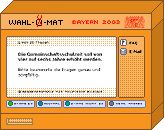

|
 Was ist der Wahl-O-Mat ?Der Wahl-O-Mat Bayern 2003 ist ein Gemeinschaftsprodukt von Bundeszentrale für politische Bildung (bpb) und Bayerischem Jugendring (BJR) mit Unterstützung des Instituut voor Publiek en Politiek (IPP) in Amsterdam. Thesen und Inhalte des Wahl-O-Mat wurden von einem Redaktionsteam aus neun Erstwählerinnen und Erstwählern entwickelt, die dem BJR und seinen Mitgliedsverbänden angehören, ergänzt um die Landeschülervertretung Bayern. Beraten wurden sie von bpb, BJR und den Wissenschaftlern Wolf Dittmayer, Dr. Stefan Marschall und Dr. Norbert Taubken. |